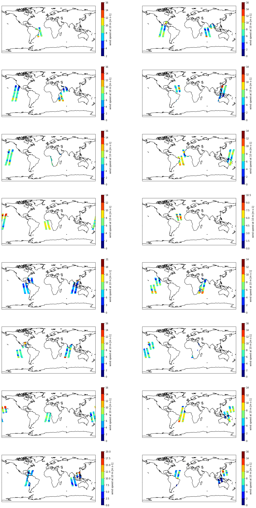
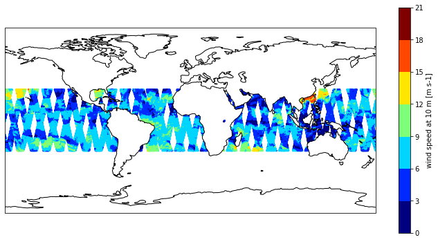

import xarray as xr
import tempfile
from IPython.display import display, JSON
from datetime import datetime, timedelta, time
from harmony import BBox, Client, Collection, Request, Environment, LinkType
from mpl_toolkits.basemap import Basemap
import matplotlib.pyplot as plt
import cartopy.crs as ccrs
import s3fs
import warnings
warnings.filterwarnings('ignore')
%matplotlib inlineHarmony Concise + L2SS-Py Demo
What is Concise?
Concise is a Harmony service developed by PODAAC that allows users to concatenate multiple L2 granules together into a single granule. This concatenation is done by adding a new subset_index dimension to the resulting granule.
What is L2SS-Py + Concise?
Harmony supports chaining multiple services together. The L2SS-Py + Concise chain allows users to combine spatial, temporal, and variable subsetting with granule concatenation.
Before you start
Before you beginning this tutorial, make sure you have an account in the Earthdata Login, which is required to access data from the NASA Earthdata system. Please visit https://urs.earthdata.nasa.gov to register for an Earthdata Login account. It is free to create and only takes a moment to set up.
You will also need a netrc file containing your NASA Earthdata Login credentials in order to execute this notebook. A netrc file can be created manually within text editor and saved to your home directory. For additional information see: Authentication for NASA Earthdata.
Running the Demo
The remaining notebook walks through constructing a request that first subsets multiple files from a collection and then concatenates the results together into a single output file. This is accomplished using the Harmony coverages API through the use of the harmony-py python library.
The collection being used in the demonstration is the ASCATB-L2-25km collection which contains operational near-real-time Level 2 ocean surface wind vector retrievals from the Advanced Scatterometer (ASCAT) on MetOp-B at 25 km sampling resolution.
The first step is to import the libraries needed to run the demo.
Create Harmony-py client.
harmony_client = Client(env=Environment.PROD)With the client created, we can contruct and validate the request. As this is a subsetting + concatenation request, we specify options on the request that define spatial bounds, variables we are interested in, temporal bounds, and indicated the result should be concatenated. Since this is a near real time dataset, we will request the data from yesterday.
collection = Collection(id='C2075141559-POCLOUD')
yesterday = datetime.today() - timedelta(days=1)
request = Request(
collection=collection,
spatial=BBox(-180, -30, 180, 30),
variables=[
'wind_speed',
'wind_dir'
],
temporal={
'start': datetime.combine(yesterday, time.min),
'stop': datetime.combine(yesterday, time.max)
},
concatenate=True
)
request.is_valid()TrueNow that we have a valid request we simply need to call the submit function using the client we created earlier and pass in the request as a parameter.
Tip: if you want to see the request before submitting it, use the request_as_curl function on the client to get an equivalent curl command for the request that will be submitted.
print(harmony_client.request_as_curl(request))
job_id = harmony_client.submit(request)
print(f'Job ID: {job_id}')curl -X GET -H 'Accept: */*' -H 'Accept-Encoding: gzip, deflate' -H 'Connection: keep-alive' -H 'Cookie: urs_user_already_logged=yes; token=*****; _urs-gui_session=046f3430c6ca2f9e3e00d94c0bee2f70' -H 'User-Agent: Windows/10 harmony-py/0.4.2 CPython/3.8.12 python-requests/2.25.1' 'https://harmony.earthdata.nasa.gov/C2075141559-POCLOUD/ogc-api-coverages/1.0.0/collections/wind_speed,wind_dir/coverage/rangeset?forceAsync=true&subset=lat%28-30%3A30%29&subset=lon%28-180%3A180%29&subset=time%28%222022-10-19T00%3A00%3A00%22%3A%222022-10-19T23%3A59%3A59.999999%22%29&concatenate=true'
Job ID: 87ec4775-7949-482c-96b2-11f5e6941d15After submitting the request it is possible to retrieve the current processing status by using the job ID returned from the submission.
harmony_client.status(job_id){'status': 'running',
'message': 'The job is being processed',
'progress': 0,
'created_at': datetime.datetime(2022, 10, 20, 22, 45, 28, 721000, tzinfo=tzutc()),
'updated_at': datetime.datetime(2022, 10, 20, 22, 45, 29, 72000, tzinfo=tzutc()),
'created_at_local': '2022-10-20T15:45:28-07:00',
'updated_at_local': '2022-10-20T15:45:29-07:00',
'data_expiration': datetime.datetime(2022, 11, 19, 22, 45, 28, 721000, tzinfo=tzutc()),
'data_expiration_local': '2022-11-19T14:45:28-08:00',
'request': 'https://harmony.earthdata.nasa.gov/C2075141559-POCLOUD/ogc-api-coverages/1.0.0/collections/wind_speed,wind_dir/coverage/rangeset?forceAsync=true&subset=lat(-30%3A30)&subset=lon(-180%3A180)&subset=time(%222022-10-19T00%3A00%3A00%22%3A%222022-10-19T23%3A59%3A59.999999%22)&concatenate=true',
'num_input_granules': 16}If the request is still running, we can wait until the Harmony request has finished processing. This cell will wait until the request has finised.
harmony_client.wait_for_processing(job_id, show_progress=True) [ Processing: 100% ] |###################################################| [|]Now that the request has completed we can inspect the results using xarray and matplotlib.
First, let’s download the result into a temporary directory
temp_dir = tempfile.mkdtemp()
futures = harmony_client.download_all(job_id, directory=temp_dir, overwrite=True)
file_names = [f.result() for f in futures]
file_names['C:\\Users\\nickles\\AppData\\Local\\Temp\\tmpqzco2nld\\C2075141559-POCLOUD_merged.nc4']With the output file downloaded, now we can open concatenated granule using xarray to inspect some of the metadata.
Notice the variable subset has been successfully executed – only wind_dir and wind_speed vars are present. In addition, there is a new dimension subset_index added to each variable in the dataset. The index of this dimension corresponds to the original file named in the subset_files variable that contained the data at that index.
ds = xr.open_dataset(file_names[0], decode_times=False)
ds<xarray.Dataset>
Dimensions: (subset_index: 16, NUMROWS: 596, NUMCELLS: 42)
Coordinates:
lat (subset_index, NUMROWS, NUMCELLS) float32 ...
lon (subset_index, NUMROWS, NUMCELLS) float32 ...
Dimensions without coordinates: subset_index, NUMROWS, NUMCELLS
Data variables:
subset_files (subset_index) object 'ascat_20221018_222700_metopb_52328_e...
time (subset_index, NUMROWS, NUMCELLS) float64 ...
wind_speed (subset_index, NUMROWS, NUMCELLS) float32 ...
wind_dir (subset_index, NUMROWS, NUMCELLS) float32 ...
Attributes: (12/18)
title: MetOp-B ASCAT Level 2 25.0 km Ocean Sur...
title_short_name: ASCATB-L2-25km
Conventions: CF-1.6
institution: EUMETSAT/OSI SAF/KNMI
source: MetOp-B ASCAT
software_identification_level_1: 1000
... ...
processing_level: L2
rev_orbit_period: 6081.7
orbit_inclination: 98.7
references: ASCAT Wind Product User Manual, https:/...
comment: Orbit period and inclination are consta...
history_json: [{"date_time": "2022-10-20T22:45:37.904...xarray.Dataset
- subset_index: 16
- NUMROWS: 596
- NUMCELLS: 42
- lat(subset_index, NUMROWS, NUMCELLS)float32...
- valid_min :
- -9000000
- valid_max :
- 9000000
- standard_name :
- latitude
- long_name :
- latitude
- units :
- degrees_north
[400512 values with dtype=float32]
- lon(subset_index, NUMROWS, NUMCELLS)float32...
- valid_min :
- 0
- valid_max :
- 36000000
- standard_name :
- longitude
- long_name :
- longitude
- units :
- degrees_east
[400512 values with dtype=float32]
- subset_files(subset_index)object...
- long_name :
- List of subsetted files used to create this merge product.
array(['ascat_20221018_222700_metopb_52328_eps_o_250_3301_ovw.l2_subsetted.nc4', 'ascat_20221019_152100_metopb_52338_eps_o_250_3301_ovw.l2_subsetted.nc4', 'ascat_20221019_170300_metopb_52339_eps_o_250_3301_ovw.l2_subsetted.nc4', 'ascat_20221019_000900_metopb_52329_eps_o_250_3301_ovw.l2_subsetted.nc4', 'ascat_20221019_184500_metopb_52340_eps_o_250_3301_ovw.l2_subsetted.nc4', 'ascat_20221019_220600_metopb_52342_eps_o_250_3301_ovw.l2_subsetted.nc4', 'ascat_20221019_202700_metopb_52341_eps_o_250_3301_ovw.l2_subsetted.nc4', 'ascat_20221019_234800_metopb_52343_eps_o_250_3301_ovw.l2_subsetted.nc4', 'ascat_20221019_015100_metopb_52330_eps_o_250_3301_ovw.l2_subsetted.nc4', 'ascat_20221019_051200_metopb_52332_eps_o_250_3301_ovw.l2_subsetted.nc4', 'ascat_20221019_033300_metopb_52331_eps_o_250_3301_ovw.l2_subsetted.nc4', 'ascat_20221019_065400_metopb_52333_eps_o_250_3301_ovw.l2_subsetted.nc4', 'ascat_20221019_083600_metopb_52334_eps_o_250_3301_ovw.l2_subsetted.nc4', 'ascat_20221019_101800_metopb_52335_eps_o_250_3301_ovw.l2_subsetted.nc4', 'ascat_20221019_133900_metopb_52337_eps_o_250_3301_ovw.l2_subsetted.nc4', 'ascat_20221019_120000_metopb_52336_eps_o_250_3301_ovw.l2_subsetted.nc4'], dtype=object) - time(subset_index, NUMROWS, NUMCELLS)float64...
- valid_min :
- 0
- valid_max :
- 2147483647
- standard_name :
- time
- long_name :
- time
- units :
- seconds since 1990-01-01
- calendar :
- proleptic_gregorian
[400512 values with dtype=float64]
- wind_speed(subset_index, NUMROWS, NUMCELLS)float32...
- valid_min :
- 0
- valid_max :
- 5000
- standard_name :
- wind_speed
- long_name :
- wind speed at 10 m
- units :
- m s-1
[400512 values with dtype=float32]
- wind_dir(subset_index, NUMROWS, NUMCELLS)float32...
- valid_min :
- 0
- valid_max :
- 3600
- standard_name :
- wind_to_direction
- long_name :
- wind direction at 10 m
- units :
- degree
[400512 values with dtype=float32]
- title :
- MetOp-B ASCAT Level 2 25.0 km Ocean Surface Wind Vector Product
- title_short_name :
- ASCATB-L2-25km
- Conventions :
- CF-1.6
- institution :
- EUMETSAT/OSI SAF/KNMI
- source :
- MetOp-B ASCAT
- software_identification_level_1 :
- 1000
- instrument_calibration_version :
- 0
- software_identification_wind :
- 3301
- pixel_size_on_horizontal :
- 25.0 km
- service_type :
- eps
- processing_type :
- O
- contents :
- ovw
- processing_level :
- L2
- rev_orbit_period :
- 6081.7
- orbit_inclination :
- 98.7
- references :
- ASCAT Wind Product User Manual, https://osi-saf.eumetsat.int/, https://scatterometer.knmi.nl/
- comment :
- Orbit period and inclination are constant values. All wind directions in oceanographic convention (0 deg. flowing North)
- history_json :
- [{"date_time": "2022-10-20T22:45:37.904685+00:00", "derived_from": "https://archive.podaac.earthdata.nasa.gov/podaac-ops-cumulus-protected/ASCATB-L2-25km/ascat_20221018_222700_metopb_52328_eps_o_250_3301_ovw.l2.nc", "program": "l2ss-py", "version": "2.2.0", "parameters": "bbox=[[-180, 180], [-30, 30]] cut=True", "program_ref": "https://cmr.earthdata.nasa.gov:443/search/concepts/S1962070864-POCLOUD", "$schema": "https://harmony.earthdata.nasa.gov/schemas/history/0.1.0/history-v0.1.0.json"}, {"date_time": "2022-10-20T22:45:40.891502+00:00", "derived_from": "https://archive.podaac.earthdata.nasa.gov/podaac-ops-cumulus-protected/ASCATB-L2-25km/ascat_20221019_152100_metopb_52338_eps_o_250_3301_ovw.l2.nc", "program": "l2ss-py", "version": "2.2.0", "parameters": "bbox=[[-180, 180], [-30, 30]] cut=True", "program_ref": "https://cmr.earthdata.nasa.gov:443/search/concepts/S1962070864-POCLOUD", "$schema": "https://harmony.earthdata.nasa.gov/schemas/history/0.1.0/history-v0.1.0.json"}, {"date_time": "2022-10-20T22:45:37.825551+00:00", "derived_from": "https://archive.podaac.earthdata.nasa.gov/podaac-ops-cumulus-protected/ASCATB-L2-25km/ascat_20221019_184500_metopb_52340_eps_o_250_3301_ovw.l2.nc", "program": "l2ss-py", "version": "2.2.0", "parameters": "bbox=[[-180, 180], [-30, 30]] cut=True", "program_ref": "https://cmr.earthdata.nasa.gov:443/search/concepts/S1962070864-POCLOUD", "$schema": "https://harmony.earthdata.nasa.gov/schemas/history/0.1.0/history-v0.1.0.json"}, {"date_time": "2022-10-20T22:45:38.951797+00:00", "derived_from": "https://archive.podaac.earthdata.nasa.gov/podaac-ops-cumulus-protected/ASCATB-L2-25km/ascat_20221019_220600_metopb_52342_eps_o_250_3301_ovw.l2.nc", "program": "l2ss-py", "version": "2.2.0", "parameters": "bbox=[[-180, 180], [-30, 30]] cut=True", "program_ref": "https://cmr.earthdata.nasa.gov:443/search/concepts/S1962070864-POCLOUD", "$schema": "https://harmony.earthdata.nasa.gov/schemas/history/0.1.0/history-v0.1.0.json"}, {"date_time": "2022-10-20T22:45:39.479597+00:00", "derived_from": "https://archive.podaac.earthdata.nasa.gov/podaac-ops-cumulus-protected/ASCATB-L2-25km/ascat_20221019_015100_metopb_52330_eps_o_250_3301_ovw.l2.nc", "program": "l2ss-py", "version": "2.2.0", "parameters": "bbox=[[-180, 180], [-30, 30]] cut=True", "program_ref": "https://cmr.earthdata.nasa.gov:443/search/concepts/S1962070864-POCLOUD", "$schema": "https://harmony.earthdata.nasa.gov/schemas/history/0.1.0/history-v0.1.0.json"}, {"date_time": "2022-10-20T22:45:40.201629+00:00", "derived_from": "https://archive.podaac.earthdata.nasa.gov/podaac-ops-cumulus-protected/ASCATB-L2-25km/ascat_20221019_065400_metopb_52333_eps_o_250_3301_ovw.l2.nc", "program": "l2ss-py", "version": "2.2.0", "parameters": "bbox=[[-180, 180], [-30, 30]] cut=True", "program_ref": "https://cmr.earthdata.nasa.gov:443/search/concepts/S1962070864-POCLOUD", "$schema": "https://harmony.earthdata.nasa.gov/schemas/history/0.1.0/history-v0.1.0.json"}, {"date_time": "2022-10-20T22:45:39.958642+00:00", "derived_from": "https://archive.podaac.earthdata.nasa.gov/podaac-ops-cumulus-protected/ASCATB-L2-25km/ascat_20221019_101800_metopb_52335_eps_o_250_3301_ovw.l2.nc", "program": "l2ss-py", "version": "2.2.0", "parameters": "bbox=[[-180, 180], [-30, 30]] cut=True", "program_ref": "https://cmr.earthdata.nasa.gov:443/search/concepts/S1962070864-POCLOUD", "$schema": "https://harmony.earthdata.nasa.gov/schemas/history/0.1.0/history-v0.1.0.json"}, {"date_time": "2022-10-20T22:45:37.611733+00:00", "derived_from": "https://archive.podaac.earthdata.nasa.gov/podaac-ops-cumulus-protected/ASCATB-L2-25km/ascat_20221019_170300_metopb_52339_eps_o_250_3301_ovw.l2.nc", "program": "l2ss-py", "version": "2.2.0", "parameters": "bbox=[[-180, 180], [-30, 30]] cut=True", "program_ref": "https://cmr.earthdata.nasa.gov:443/search/concepts/S1962070864-POCLOUD", "$schema": "https://harmony.earthdata.nasa.gov/schemas/history/0.1.0/history-v0.1.0.json"}, {"date_time": "2022-10-20T22:45:40.394288+00:00", "derived_from": "https://archive.podaac.earthdata.nasa.gov/podaac-ops-cumulus-protected/ASCATB-L2-25km/ascat_20221019_202700_metopb_52341_eps_o_250_3301_ovw.l2.nc", "program": "l2ss-py", "version": "2.2.0", "parameters": "bbox=[[-180, 180], [-30, 30]] cut=True", "program_ref": "https://cmr.earthdata.nasa.gov:443/search/concepts/S1962070864-POCLOUD", "$schema": "https://harmony.earthdata.nasa.gov/schemas/history/0.1.0/history-v0.1.0.json"}, {"date_time": "2022-10-20T22:45:39.465600+00:00", "derived_from": "https://archive.podaac.earthdata.nasa.gov/podaac-ops-cumulus-protected/ASCATB-L2-25km/ascat_20221019_051200_metopb_52332_eps_o_250_3301_ovw.l2.nc", "program": "l2ss-py", "version": "2.2.0", "parameters": "bbox=[[-180, 180], [-30, 30]] cut=True", "program_ref": "https://cmr.earthdata.nasa.gov:443/search/concepts/S1962070864-POCLOUD", "$schema": "https://harmony.earthdata.nasa.gov/schemas/history/0.1.0/history-v0.1.0.json"}, {"date_time": "2022-10-20T22:45:39.632834+00:00", "derived_from": "https://archive.podaac.earthdata.nasa.gov/podaac-ops-cumulus-protected/ASCATB-L2-25km/ascat_20221019_083600_metopb_52334_eps_o_250_3301_ovw.l2.nc", "program": "l2ss-py", "version": "2.2.0", "parameters": "bbox=[[-180, 180], [-30, 30]] cut=True", "program_ref": "https://cmr.earthdata.nasa.gov:443/search/concepts/S1962070864-POCLOUD", "$schema": "https://harmony.earthdata.nasa.gov/schemas/history/0.1.0/history-v0.1.0.json"}, {"date_time": "2022-10-20T22:45:43.428456+00:00", "derived_from": "https://archive.podaac.earthdata.nasa.gov/podaac-ops-cumulus-protected/ASCATB-L2-25km/ascat_20221019_120000_metopb_52336_eps_o_250_3301_ovw.l2.nc", "program": "l2ss-py", "version": "2.2.0", "parameters": "bbox=[[-180, 180], [-30, 30]] cut=True", "program_ref": "https://cmr.earthdata.nasa.gov:443/search/concepts/S1962070864-POCLOUD", "$schema": "https://harmony.earthdata.nasa.gov/schemas/history/0.1.0/history-v0.1.0.json"}, {"date_time": "2022-10-20T22:45:37.471227+00:00", "derived_from": "https://archive.podaac.earthdata.nasa.gov/podaac-ops-cumulus-protected/ASCATB-L2-25km/ascat_20221019_000900_metopb_52329_eps_o_250_3301_ovw.l2.nc", "program": "l2ss-py", "version": "2.2.0", "parameters": "bbox=[[-180, 180], [-30, 30]] cut=True", "program_ref": "https://cmr.earthdata.nasa.gov:443/search/concepts/S1962070864-POCLOUD", "$schema": "https://harmony.earthdata.nasa.gov/schemas/history/0.1.0/history-v0.1.0.json"}, {"date_time": "2022-10-20T22:45:39.335118+00:00", "derived_from": "https://archive.podaac.earthdata.nasa.gov/podaac-ops-cumulus-protected/ASCATB-L2-25km/ascat_20221019_234800_metopb_52343_eps_o_250_3301_ovw.l2.nc", "program": "l2ss-py", "version": "2.2.0", "parameters": "bbox=[[-180, 180], [-30, 30]] cut=True", "program_ref": "https://cmr.earthdata.nasa.gov:443/search/concepts/S1962070864-POCLOUD", "$schema": "https://harmony.earthdata.nasa.gov/schemas/history/0.1.0/history-v0.1.0.json"}, {"date_time": "2022-10-20T22:45:40.743323+00:00", "derived_from": "https://archive.podaac.earthdata.nasa.gov/podaac-ops-cumulus-protected/ASCATB-L2-25km/ascat_20221019_033300_metopb_52331_eps_o_250_3301_ovw.l2.nc", "program": "l2ss-py", "version": "2.2.0", "parameters": "bbox=[[-180, 180], [-30, 30]] cut=True", "program_ref": "https://cmr.earthdata.nasa.gov:443/search/concepts/S1962070864-POCLOUD", "$schema": "https://harmony.earthdata.nasa.gov/schemas/history/0.1.0/history-v0.1.0.json"}, {"date_time": "2022-10-20T22:45:43.732829+00:00", "derived_from": "https://archive.podaac.earthdata.nasa.gov/podaac-ops-cumulus-protected/ASCATB-L2-25km/ascat_20221019_133900_metopb_52337_eps_o_250_3301_ovw.l2.nc", "program": "l2ss-py", "version": "2.2.0", "parameters": "bbox=[[-180, 180], [-30, 30]] cut=True", "program_ref": "https://cmr.earthdata.nasa.gov:443/search/concepts/S1962070864-POCLOUD", "$schema": "https://harmony.earthdata.nasa.gov/schemas/history/0.1.0/history-v0.1.0.json"}, {"date_time": "2022-10-20T22:45:48.424799+00:00", "derived_from": ["ascat_20221018_222700_metopb_52328_eps_o_250_3301_ovw.l2_subsetted.nc4", "ascat_20221019_152100_metopb_52338_eps_o_250_3301_ovw.l2_subsetted.nc4", "ascat_20221019_170300_metopb_52339_eps_o_250_3301_ovw.l2_subsetted.nc4", "ascat_20221019_000900_metopb_52329_eps_o_250_3301_ovw.l2_subsetted.nc4", "ascat_20221019_184500_metopb_52340_eps_o_250_3301_ovw.l2_subsetted.nc4", "ascat_20221019_220600_metopb_52342_eps_o_250_3301_ovw.l2_subsetted.nc4", "ascat_20221019_202700_metopb_52341_eps_o_250_3301_ovw.l2_subsetted.nc4", "ascat_20221019_234800_metopb_52343_eps_o_250_3301_ovw.l2_subsetted.nc4", "ascat_20221019_015100_metopb_52330_eps_o_250_3301_ovw.l2_subsetted.nc4", "ascat_20221019_051200_metopb_52332_eps_o_250_3301_ovw.l2_subsetted.nc4", "ascat_20221019_033300_metopb_52331_eps_o_250_3301_ovw.l2_subsetted.nc4", "ascat_20221019_065400_metopb_52333_eps_o_250_3301_ovw.l2_subsetted.nc4", "ascat_20221019_083600_metopb_52334_eps_o_250_3301_ovw.l2_subsetted.nc4", "ascat_20221019_101800_metopb_52335_eps_o_250_3301_ovw.l2_subsetted.nc4", "ascat_20221019_133900_metopb_52337_eps_o_250_3301_ovw.l2_subsetted.nc4", "ascat_20221019_120000_metopb_52336_eps_o_250_3301_ovw.l2_subsetted.nc4"], "program": "concise", "version": "0.5.0", "parameters": "input_files=[PosixPath('/tmp/tmp6qevy37z/ascat_20221018_222700_metopb_52328_eps_o_250_3301_ovw.l2_subsetted.nc4'), PosixPath('/tmp/tmp6qevy37z/ascat_20221019_152100_metopb_52338_eps_o_250_3301_ovw.l2_subsetted.nc4'), PosixPath('/tmp/tmp6qevy37z/ascat_20221019_170300_metopb_52339_eps_o_250_3301_ovw.l2_subsetted.nc4'), PosixPath('/tmp/tmp6qevy37z/ascat_20221019_000900_metopb_52329_eps_o_250_3301_ovw.l2_subsetted.nc4'), PosixPath('/tmp/tmp6qevy37z/ascat_20221019_184500_metopb_52340_eps_o_250_3301_ovw.l2_subsetted.nc4'), PosixPath('/tmp/tmp6qevy37z/ascat_20221019_220600_metopb_52342_eps_o_250_3301_ovw.l2_subsetted.nc4'), PosixPath('/tmp/tmp6qevy37z/ascat_20221019_202700_metopb_52341_eps_o_250_3301_ovw.l2_subsetted.nc4'), PosixPath('/tmp/tmp6qevy37z/ascat_20221019_234800_metopb_52343_eps_o_250_3301_ovw.l2_subsetted.nc4'), PosixPath('/tmp/tmp6qevy37z/ascat_20221019_015100_metopb_52330_eps_o_250_3301_ovw.l2_subsetted.nc4'), PosixPath('/tmp/tmp6qevy37z/ascat_20221019_051200_metopb_52332_eps_o_250_3301_ovw.l2_subsetted.nc4'), PosixPath('/tmp/tmp6qevy37z/ascat_20221019_033300_metopb_52331_eps_o_250_3301_ovw.l2_subsetted.nc4'), PosixPath('/tmp/tmp6qevy37z/ascat_20221019_065400_metopb_52333_eps_o_250_3301_ovw.l2_subsetted.nc4'), PosixPath('/tmp/tmp6qevy37z/ascat_20221019_083600_metopb_52334_eps_o_250_3301_ovw.l2_subsetted.nc4'), PosixPath('/tmp/tmp6qevy37z/ascat_20221019_101800_metopb_52335_eps_o_250_3301_ovw.l2_subsetted.nc4'), PosixPath('/tmp/tmp6qevy37z/ascat_20221019_133900_metopb_52337_eps_o_250_3301_ovw.l2_subsetted.nc4'), PosixPath('/tmp/tmp6qevy37z/ascat_20221019_120000_metopb_52336_eps_o_250_3301_ovw.l2_subsetted.nc4')]", "program_ref": "https://cmr.earthdata.nasa.gov:443/search/concepts/S2153799015-POCLOUD", "$schema": "https://harmony.earthdata.nasa.gov/schemas/history/0.1.0/history-v0.1.0.json"}]
Using matplotlib, we can genearte a plot for each granule that makes up this concatenated granule. Plot wind_speed for each granule using subset_index dimension.
fig = plt.figure(figsize=(20, 40))
for index in range(0, len(ds.subset_index)):
ax = fig.add_subplot((len(ds.subset_index)+1)//2, 2, index+1, projection=ccrs.PlateCarree())
p = ds.isel(subset_index=index).plot.scatter(
y="lat",
x="lon",
hue="wind_speed",
s=1,
levels=9,
cmap="jet",
ax=ax
)
ax.set_global()
ax.coastlines()
plt.show()
Plot wind_speed for all data in this concatenated granule on a single map. Notice that the data is within the spatial bounds we provided earlier.
plt.figure(figsize=(12, 6))
ax = plt.axes(projection=ccrs.PlateCarree())
p = ds.plot.scatter(
y="lat",
x="lon",
hue="wind_speed",
s=1,
levels=9,
cmap="jet",
ax=ax
)
ax.set_global()
ax.coastlines()
plt.show()